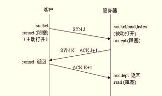

UNIX网络编程
Table of Contents
协议相关
TCP
协议详解
tcp的头部格式
0 1 2 3 0 1 2 3 4 5 6 7 8 9 0 1 2 3 4 5 6 7 8 9 0 1 2 3 4 5 6 7 8 9 0 1 +-+-+-+-+-+-+-+-+-+-+-+-+-+-+-+-+-+-+-+-+-+-+-+-+-+-+-+-+-+-+-+-+ | Source Port | Destination Port | +-+-+-+-+-+-+-+-+-+-+-+-+-+-+-+-+-+-+-+-+-+-+-+-+-+-+-+-+-+-+-+-+ | Sequence Number | +-+-+-+-+-+-+-+-+-+-+-+-+-+-+-+-+-+-+-+-+-+-+-+-+-+-+-+-+-+-+-+-+ | Acknowledgment Number | +-+-+-+-+-+-+-+-+-+-+-+-+-+-+-+-+-+-+-+-+-+-+-+-+-+-+-+-+-+-+-+-+ | Data | |U|A|P|R|S|F| | | Offset| Reserved |R|C|S|S|Y|I| Receive Window Size | | | |G|K|H|T|N|N| | +-+-+-+-+-+-+-+-+-+-+-+-+-+-+-+-+-+-+-+-+-+-+-+-+-+-+-+-+-+-+-+-+ | Checksum | Urgent Pointer | +-+-+-+-+-+-+-+-+-+-+-+-+-+-+-+-+-+-+-+-+-+-+-+-+-+-+-+-+-+-+-+-+ | Options | Padding | +-+-+-+-+-+-+-+-+-+-+-+-+-+-+-+-+-+-+-+-+-+-+-+-+-+-+-+-+-+-+-+-+ | data | +-+-+-+-+-+-+-+-+-+-+-+-+-+-+-+-+-+-+-+-+-+-+-+-+-+-+-+-+-+-+-+-+
几点解释:
- Source Port, Destination Port是端口号
- Sequence Number: tcp对内部传送的每一个字节都会编号, 该字段代表的就是该数 据报第一个字节的编号.
- Acknowledgment Number: 当接受端收到一个tcp数据报后,会发送一个确认报文,发 送端就是根据确认报文来判断该数据报是否发送成功,如果长时间没有收到确认报 文,那么发送端就会重发tcp数据报, 确认报文的ACK必须为1,同时Acknowledgment Number代表该端期望接受数据的序号,比如接受端收到一个tcp报文,该报文的 Sequence Number是a, 同时报文长度是b, 那么对该报文的确认报文的 Acknowledgment Number字段就是a+b. 只有ACK标志为1时该字段才有效
- Data Offset: 实际数据在报文中的偏移,也可以看作是tcp头部的大小,因为tcp头部 包含options所以他的大小是可变的,这就是该字段存在的原因.
- 标志:
- URG: 紧急指针
- ACK: Acknowledgement number有效
- PSH:
- RST: 重置连接, 万恶的GFW经常这么干.
- SYN: Synchronize sequence numbers, 三步握手时需要.
- FIN: finish, 关闭连接时会用到该标志
- Window size: 用来标示发送该数据报的一端希望接收的数据大小, 主要用来进行 流控制(flow control).
其他说明:
- TCP可以看做是一个全双工管道,可读可写, 也就是说一个tcp socket的读写是分离, 互不干扰的.
- TCP提供了流控制,也就是说内部有缓冲区,如果缓冲区满了那么相应的操作就会阻塞,举 个例子, 如果接受者的读缓冲区满了,那么你在发送者一端调用write就会阻塞.
三步握手
如下图所示:  三个报文:
- SYN标志为1, 同时为Sequence Number指定一个初始值J
- SYN以及ACK标志为1,同时为Sequence Number指定一个初始值K, 同时将 Acknowledgement Number设为J+1.
- ACK标志为1, 同时将Acknowledgement Number设为K+1, FIN报文会消耗一个编号
连接关闭
如下图所示
状态变化
如下图所示

TIME_WAIT: 关闭连接时, 执行主动关闭的一方的socket在发送了最后一个ACK后进入 TIME_WAIT状态,并保持该状态2SML(1-4分钟), 该状态存在的原因是:
- 如果最后一个ACK丢失,那么对方就会重发FIN报文,这时socket有机会发送ACK报文, 而不是由内核发送RST报文.
- 可以让网络中当前连接的tcp报文全部失效,因为TCP会超时重传,所以网络可能存在 一些没有被当前客户端接受的报文,等待2SML后这些报文就都失效了. 如果不等待 2SML, 同时你又在相同的interface上创建了socket,那么这些上一次连接的报文就 可能被本次连接认为有效.
处于TIME_WAIT时,(ip, port)不可用, 所以有时重启服务器需要等一段时间., 当然 只有在服务器有客户端连接的情况下才会出现这种情况,因为如果这时重启服务器,那么 服务器端会执行主动关闭,所以就会进入TIME_WAIT状态. 如果没有客户端连接,那么服 务器一般就只有一个listen socket,关闭它不会进入TIME_WAIT.
socket地址相关
有一个通用地址结构 struct sockaddr_in, bind, connect这样的API中都是使用这个
结构, 其它的地址结构必须类型转换为该结构. ipv6又定义了一个新的通用地址结构
struct sock_storage, 该结构可以包含所有的地址,包括ipv4,ipv6以及unix.
/* -------------- 通用地址结构(旧) ----------------------- */ struct sockaddr { uint8_t sa_len; sa_family_t sa_family; /* address family: AF_xxx value */ char sa_data[14]; /* protocol-specific address */ }; /* ---------------- ipv4 ----------------------------------- */ struct in_addr { in_addr_t s_addr; /* 32-bit IPv4 address */ /* network byte ordered */ }; struct sockaddr_in { uint8_t sin_len; /* length of structure (16) */ sa_family_t sin_family; /* AF_INET */ in_port_t sin_port; /* 16-bit TCP or UDP port number */ /* network byte ordered */ struct in_addr sin_addr; /* 32-bit IPv4 address */ /* network byte ordered */ char sin_zero[8]; /* unused */ }; /* --------------通用地址结构(新, ipv6定义) ------------------ */ struct sockaddr_storage { uint8_t ss_len; /* length of this struct (implementation dependent) */ sa_family_t ss_family; /* address family: AF_xxx value */ /* implementation-dependent elements to provide: * a) alignment sufficient to fulfill the alignment requirements of * all socket address types that the system supports. * b) enough storage to hold any type of socket address that the * system supports. */ }; /* ------------------------ ipv6 --------------------------- */ struct in6_addr { uint8_t s6_addr[16]; /* 128-bit IPv6 address */ /* network byte ordered */ }; #define SIN6_LEN /* required for compile-time tests */ struct sockaddr_in6 { uint8_t sin6_len; /* length of this struct (28) */ sa_family_t sin6_family; /* AF_INET6 */ in_port_t sin6_port; /* transport layer port# */ /* network byte ordered */ uint32_t sin6_flowinfo; /* flow information, undefined */ struct in6_addr sin6_addr; /* IPv6 address */ /* network byte ordered */ uint32_t sin6_scope_id; /* set of interfaces for a scope */ };
- 有两个函数来转换ip地址,也就是在presentation format与numeric format之间转换,
presentation format是字符串,比如"127.0.0.1", 这种形式对人更友好,而numeric
format是数字,它是放在地址结构体中, 这两个函数能转换ipv4以及ipv6地址,原型如
下:
#include <arpa/inet.h> int inet_pton(int af, const char *src, void *dst); const char *inet_ntop(int af, const void *src, char *dst, socklen_t size);常用
inet_pton来将字符串表示的ip转换为地址结构体要求的数字ip - 因为网络程序需要在不同的机器间通信,所以字节序很重要, 网络协议默认的字节序是
大端字节序, 所以需要函数来在 主机字节序(host byte order) 与 网络字节序
(network byte order) 之间转换, 有以下几个函数:
#include <netinet/in.h> uint16_t htons(uint16_t host16bitvalue) ; uint32_t htonl(uint32_t host32bitvalue) ; Both return: value in network byte order uint16_t ntohs(uint16_t net16bitvalue) ; uint32_t ntohl(uint32_t net32bitvalue) ; Both return: value in host byte order常用
htons来转换端口号.
常用代码
- 客户端
struct sockaddr_in servaddr; bzero(&servaddr, sizeof(servaddr)); servaddr.sin_family = AF_INET; servaddr.sin_port = htons(13); if (inet_pton(AF_INET, argv[1], &servaddr.sin_addr) < 0) { /* error */ }
- 服务端
struct sockaddr_in servaddr; bzero(&servaddr, sizeof(servaddr)); servaddr.sin_family = AF_INET; servaddr.sin_port = htons(13); servaddr.sin_addr.s_addr = htonl(INADDR_ANY); /* or use inet_pton to set ip */
基本socket API
connect
客户端使用该api建立连接,它可能返回以下错误:
- ETIMEDOUT: 超时, 也就是说没有接收到server端的ACK报文.
- ECONNREFUSED: 发送SYN报文后,收到了RST报文,也就是说server端没有进程在监听 你要连接的端口.
- EHOSTUNREACH, ENETUNREACH:收到了ICMP的unreachable的报文
connect一旦出错,那么该socket就不可用了,必须关闭.
bind
listen
原型:
int listen (int sockfd, int backlog);
内核会维护两个队列:
- 未完成队列: 当客户端发送３次握手的第一个SYN报文到服务端时,该队列就会增加 一项,完成三次握手后该项就会移到已完成队列的末尾
- 已完成队列: 当客户端完成三次握手,那么在队列的末尾增加一项,当你调用accept 时就从队列的开头移除一项,如果该队列为空,那么accept会阻塞.
从linux2.2开始backlog是已完成队列的最大值. 未完成队列的最大值由一个全局值设 定,该值在 /proc/sys/net/ipv4/tcp_max_syn_backlog中, 如果已完成队列满了,而此时 未完成队列的某个连接收到了三步握手的最后一个ACK, 这时内核会忽略这个ACK(意思就 是说就像没有收到这个ACK包一样), 因此一段时间后server端会重发第二步握手的 SYN/ACK包.
socket读写api
- 对于面向连接的socket(TCP), 有以下两组api, recv/send以及read/write, 前者比 后者多了一个flag参数, 当使用flag=0来调用recv, send时,他的行为和read,write 是一样的.
- 面向非连接的socket(UDP, RAW):有以下api, recvfrom/sendto, 这两个有一个地址 参数和一个指示地址结构长度的参数, 如果将这两个值设为NULL和0,那么行为实际 和recv/send一样.
- send buffer: 在内核中,每一个socket都有一个 send buffer
- TCP: 当你调用write或者send时, 实际就是将数据从用户空间的buffer复制到 内核空间的send buffer, 如果send buffer的空间不够,那么write/send操作将阻 塞(前提是socket没有设为非阻塞).当write/send返回时,意味着数据已经都复制 到了send buffer,但不保证数据已经通过网络发送出去了. 只有收到对方的ACK报 文,这些数据才能从send buffer移除.
- UDP: 因为udp是直接将数据加上udp头部发往下层,也就是udp数据报要原子的发 送,它不能拆解,所以如果你传入的数据太大,比如比send buffer还大,那么内核会 返回错误EMSGSIZE. 如果只是当前的send buffer没有足够的空间,那么阻塞的 socket上的send调用会阻塞,非阻塞的send调用会返回EAGAIN或者EWOULDBLOCK. UDP上的send要么全部发送,要么出错,不会出现只发送一部分数据的情况
- receive buffer: 内核中每一个socket都有一个receive buffer.
- TCP: 通过tcp的流控制(tcp报文的Window字段), 可以通知peer该端目前能够接 受的数据大小,如果peer忽略该建议,同时发送来的数据大于该大小,那么内核会丢 弃这个数据报.因为receive buffer没有足够的空间容纳这些数据.丢弃后peer过 一段时间要重发,那么peer就会"慢下来", 这实际就是流量控制.
- UDP: udp没有流控制,如果receive buffer,内核会直接丢弃数据报
- 读就绪条件:满足下面四个条件之一的,read操作不会阻塞
- socket的receive buffer中的数据大于等于"低水位"值(low-water mark)
- socket的被读关闭,那么read会马上返回0
- socket是listening socket,而且这时已完成队列不为空,那么accept会立即返回
- socket上有错误在排队,read操作会直接出错返回
当读就绪时, 阻塞读与非阻塞读的行为是相似的,都会立即返回.并且返回读到的字 节数.
- 写就绪条件: 满足下面四个条件之一的,write操作不会阻塞
- socket的send buffer的空余空间大于"低水位"值,
- socket被写关闭,那么写操作会产生SIGPIPE信号.
- 非阻塞的connect,或者connect出错
- socket上有错误在排队, write会直接出错返回.
一些情形下tcp socket的行为
- server端的进程终止了,这时client端向socket写则会收到RST报文, 如果你接着向 这个socket写入数据,那么会收到SIGPIPE信号.如果你忽略了该信号,那么write会返 回EPIPE错误.
- 如果server崩溃(比如断电,比如断掉网线然后关掉进程, 总之让client无法收到正常
关闭时的FIN包), 这时有两种情况:
- 如果server端没有恢复正常(比如没有重启, 或者没有插上网线重启进程), 那么 client端会超时.
- 如果server恢复了正常,那么client向server写会收到RST, 这时读该socket会产生 ECONNRESET错误
socket options
使用下面的两个系统调用来获取以及设置socket选项
#include <sys/socket.h> int getsockopt(int sockfd, int level, int optname, void *optval, socklen_t *optlen); int setsockopt(int sockfd, int level, int optname, const void *optval socklen_t optlen);
注意optval对于不同的选项是不同的值,所以你要optlen参数来通知获得optval的长度.
SO_KEEPALIVE
如果socket设置了该选项, 那么当一个连接有两个小时没有交换数据了(这意味着程序 阻塞在某个系统调用上), 那么就会向对方发送一个keep-alive probe, 实际就是一个 tcp报文. 如果这个报文收到了正常的ACK,那么审计么也不做,如果超时或者收到RST报 文,那么被阻塞的系统调用会返回相应的错误.
SO_LINGER
改变socket调用close时的行为.默认如果你调用close,那么close会立即返回,但是如果 send buffer有数据,那么系统会现将数据发送出去. 这种默认行为可以改变
SO_RCVBUF/SO_SNDBUF
修改socket的send buffer以及receive buffer的大小. 这两个选项必须在connect与 listen之前设置.
SO_REUSEADDR/SO_REUSEPORT
主要是避免重启服务器程序时的address already in use的错误.